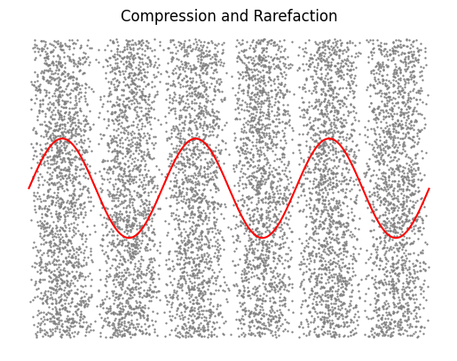
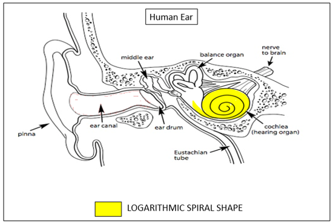
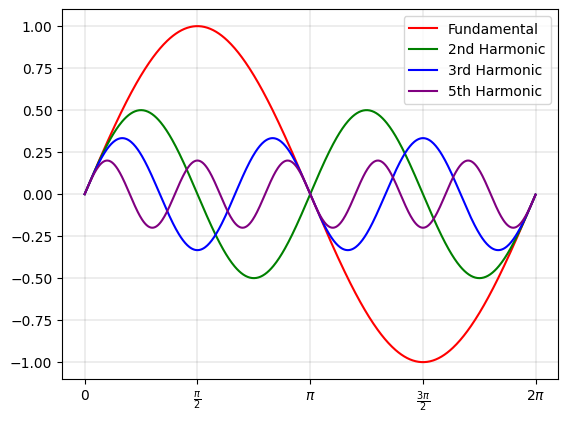

People have struggled with this question since the days of Pythagoreas and before. Some combinations of musical notes raise us up to emotional heights, and others drive us down into terror and despair. Music theorists have spent extensive time documenting which combinations work, but many do not understand why. Pleasant, harmonious combinations of tones are referred to as consonant, while distressing tones are called dissonant.
Examples of Consonant Chords
Examples of Dissonant Chords
There is no completely objective measurement of dissonance; everybody's brain is different, and we all hear sound differently. There are still quantitative measurements that apply to most people. A sound can be made dissonant, among other factors, by its psychoacoustic roughness and harmonic ambiguity. These properties stem from the physical structure of the ear and auditory nerves.
Sound, generally, is the vibration of air. This pattern of vibration can be transient or steady-state. Transient sounds occur for a short time: clapping your hands, or hitting a drum. Steady-state sounds have a defined pitch, timbre, and volume: singing a vowel, for instance, or holding a note on a wind instrument. This article is only concerned with the latter category; in music, sustained tones generally create harmony, while short, transient sounds generally establish rhythm.
At a given point in space, a steady tone is a repeating pattern of compression and rarefaction: elevated and reduced air pressure, respectively. If you were to examine the arrangement of air molecules at a point in space while a sound is playing, you might see a pattern like the one shown below (exaggerated, of course).

Because this wavefront is propagating through space, what you hear (as the sound reaches your ears) can be expressed as a function of time: in this case, the sinusoidal function shown in red. (In fact, all repeating functions can be expressed as a combination of these!) This single sinusoidal wave is comparable in tone to a tuning fork, or some flutes. Its properties are its amplitude (volume), and the frequency at which its oscillation occurs, measured in Hertz. Keep in mind that "Hertz", or "Hz", is a unit that means "times per second". A 440Hz tone, therefore, is one that oscillates 440 times every second.
Sine waves at 220, 440, and 880 Hz

Anatomy of the Cochlea, Siemens, August 2019
Humans hear sounds through a tiny organ in the ear called the cochlea: a spiral-shaped cavity in the inner ear, almost resembling a nautilus shell. This odd shape provides the ability to hear logarithmically rather than linearly. According to Siemens, if the structure were unraveled onto a line, there is more space allocated to the lower frequencies than higher ones in the human hearing range of 20 to 20,000 Hz.
This structure generates 24 "critical bands" in human hearing. If two tones of frequencies f1 and f2 are played at the same time, Siemens notes that they are perceived in one of three ways:
220 and 224 Hz, Beating
440 and 480 Hz, Roughness
Even when the tones are far apart in pitch, they can still be dissonant with one another. When producing a tone with a physical instrument, it will have more than a single sinusoidal component: it will have overtones at twice its frequency, three times its frequency, etc:

Fundamental Frequency with Harmonics 2, 3, and 5
Each of these overtones, or partials, in a combination of sounds interacts with every other sound. The end result of this interaction is that, as a general rule of thumb, intervals made of simple ratios tend to minimize dissonant interactions. This page, by Aatish Bhatia, is an outstanding demonstration of how this effect manifests in practice.
Another effect can cause dissonance even in the absence of roughness. Most Western music uses a scale called 12-Equal Temperament, which has an interval known as a tritone. The tritone is generally considered dissonant or incomplete-sounding, even when played with simple sine waves (no partials). However, one tritone above 880Hz is 1245Hz - a 365Hz difference. The ear can tell the frequencies apart, so why is there still dissonance?
Examples of Tritones
According to Alex Zorarch, the answer is harmonic ambiguity: the brain is unable to determine a clear fundamental frequency. While a frequency ratio of 3/2, 5/4, or 7/4 has a clear root, the tritone is the square root of 2, which is irrational. Rather than from roughness, dissonance emerges from confusion in the auditory centers of the brain. In fact, combinations of multiple notes can even imply several fundamentals at once, both strong and weak, creating extremely nuanced implications through ambiguity.
Harmonic roughness and ambiguity are not the only factors that can make sounds pleasant or unpleasant, but they are prevalent in analyzing harmony. Cultural training has a strong effect, as do personal preferences in music. These kinds of nearly-objective metrics provide means to analyze any other culture's music from clear, mathematical principles and provide objective descriptions for musical systems that seem entirely alien. Most importantly, they can temper our bias for familiarity, by allowing us to view our own music in the absolute, unchanging light of mathematics.